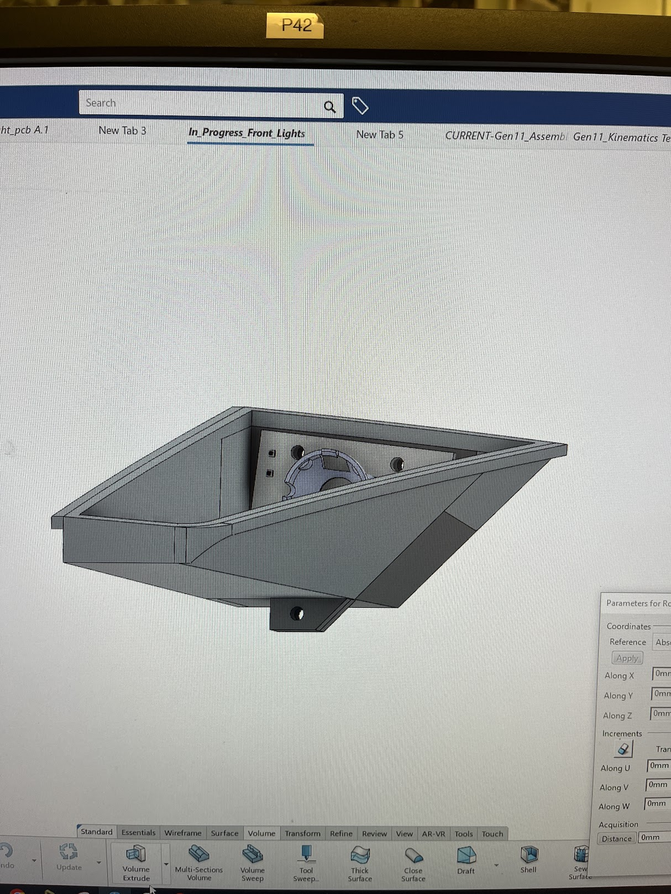
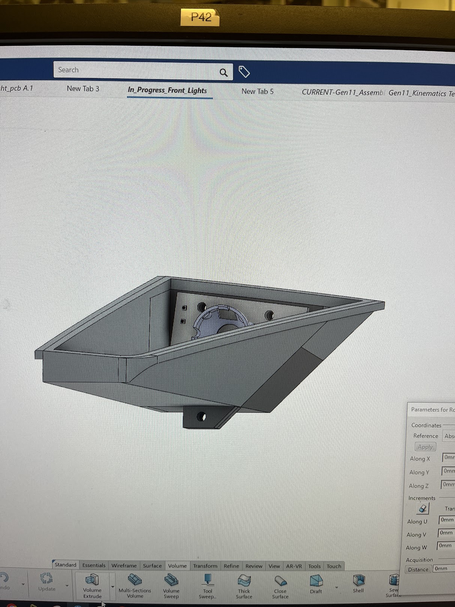

Front Lights
Daytime running lights and indicators are a necessity on solar cars, and I was tasked with making our new ones. My part of the project was the placement and shape of the light housing and cover, CADing the PCB shape, and choosing the the diffuser for the DRL based on distribution regulations.
The trickiest part about this project was that our CAD model of the car at the very front of the top aerobody did not match our actual car, so we actually had less space than I had previously thought. I had a tricky UNECE regulation about apparent surface area having to be over 25cm^2, which was impossible to fit into this smaller space without drastic changes to the car. Luckily, I decided to email the event regulators and they informed me that only the photometric UNECE regulations were considered, so the available space ended up being fine.
 

I designed these housings to both be flush to the underbody of the top, as well as ensure that we did not have any clashing when opening the top of our car, hence the 45 degree edge on the sides (The top opens like a massive door). Once I had the final shape, I ensured the pcb was able to be accessible by adding a modular backplate that can screw into the main housing. I also took the liberty to design the shape and placement of our new pcbs in the CAD.
Once I verified compliance the the viewing angle and placement regulations in the CAD, I started 3D printing and testing. I applied some reflective aluminum tape, cut out holes in the top aerobody, and epoxied in the light housings. In hindsight, I would create a stencil for these holes in the future. In the moment, I traced the outside of the lights and measured in from there, but the process could be greatly improved with a stencil. I also stenciled and handcut the transparent covers out of PETG and inset them. In the future I would lasercut for sure.
Here is the final product!